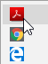
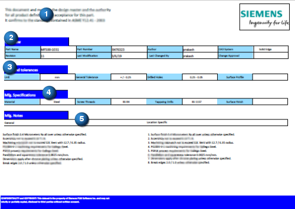
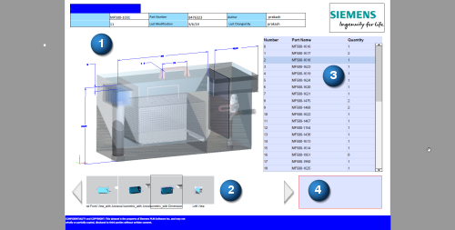
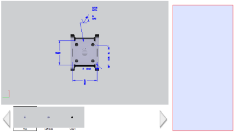
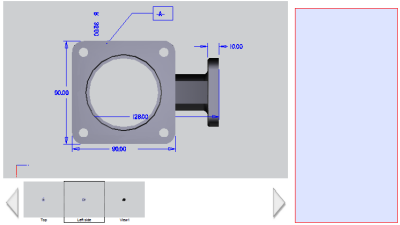
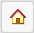
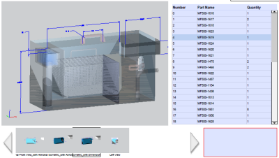
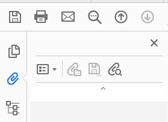

Review a published 3D PDF
When reviewing an assembly model in 3D PDF or HTML output, you can:
-
Click parts in the BOM to highlight them in the 3D View window.
-
Click thumbnails in the view carousel to change the currently displayed model view.
-
Add comments in the editable text fields for notes.
Use the following tips and techniques to open and review the MBD.
Open a published 3D PDF
Be sure to open a published 3D PDF with Adobe Acrobat Reader DC, not a web browser. Depending on your personal settings for opening different types of documents, you may need to right-click the PDF file and select the Open with shortcut command to set the default open application as Adobe Acrobat Reader DC.

To be able to interact with the 3D content, you may need to enable the following setting in Adobe Acrobat Reader DC:
-
From the menu, choose Edit→Preferences.
-
In the Preferences dialog box, select the 3D & Multimedia category, and then select Enable playing of 3D content.
Examine the content areas in the 3D PDF
The sample Solid Edge 3D PDF templates produce two pages in the published output. Use the Adobe next and previous page controls to change pages.
When reviewing the content of published output, the first page usually contains project, model, and document information derived through property text, including the part name, file name, revision, dates, reviewers, dimension tolerances, and manufacturing specifications and notes. The following example shows five different areas populated through property text values.

The second page contains the following interactive areas of the output that allow you to interrogate and review the model:
-
3D View window
-
View Carousel
-
BOM Table (for assembly models)
-
PDF Text—Editable field for entering review notes. You can save these notes with the 3D PDF.

Interact with the model
If you are not familiar with 3D PDF tools in Adobe Acrobat Reader DC, try the following techniques using the shortcut commands in the 3D View window and the commands on the 3D toolbar.
-
To display the 3D toolbar, right-click in the 3D View window and choose Tools→Show Toolbar.
-
Zoom in and out of the 3D View window using the middle mouse button. Also look for zoom, walk, spin, and fly under the Rotate command .
-
Change the view shown in the 3D View window by doing any of the following:
-
Select the views by name using the Views list on the 3D toolbar.
-
Click the thumbnail images in the view carousel. Click the right and left arrows in the view carousel to see all the available model views.


-
-
Restore the default view and fit the contents to the window: On the toolbar, click

. -
Identify assembly components by clicking parts in the BOM. Enter comments and notes in the red-outlined text area.

-
Change the background color to make it easier to read PMI. To open the Color dialog box, right-click in the 3D View window, choose Viewing Options→Select a background color.
Review model properties and values
You can use the model tree to see the custom properties and values associated with the source document.
-
On the toolbar above the 3D view window, click Show Model Tree .
-
Expand the Model Tree pane that opens on the left side of the PDF window, and click the corresponding PMI and geometry sections to see them on the model.
-
Click the root node of the model tree to list the properties and values defined in the model. These include project information, part name and type, vendor information, and BOM information.
-
Optionally, you can change the model highlight color of what you select in the model tree.
Review attachments
Manufacturing documents that were generated and attached during the publishing process, and supporting project documents that were selected for inclusion with the PDF, are located in the Attachments pane on the left side of the Adobe Acrobat Reader.
If you don't see the vertical toolbar shown below, right-click in an empty area of the 3D View window, choose Show Navigation Pane Buttons, and then click the Attachment icon. (You also can expand and collapse the pane by clicking the arrow control at the side of the window.)

Attachments are embedded in the PDF as an integral part of the model based definition. They cannot be saved as individual files to disk.